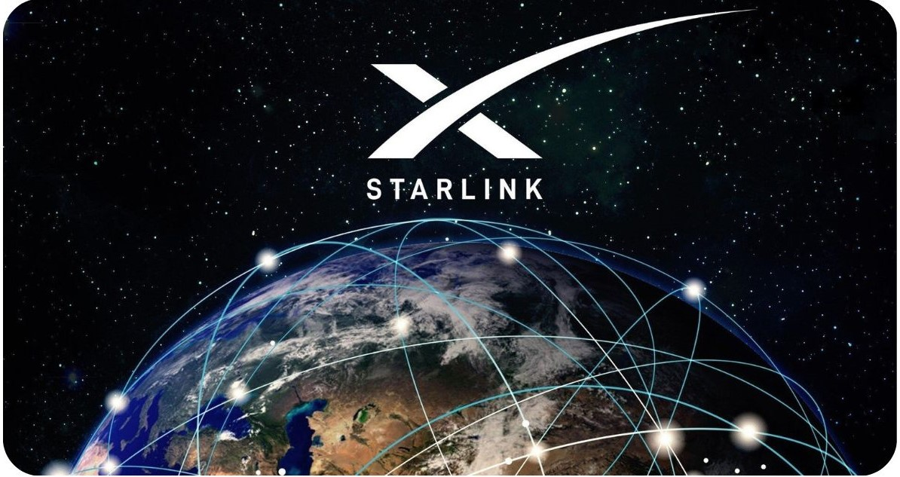
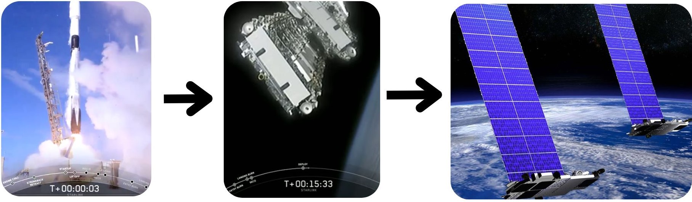
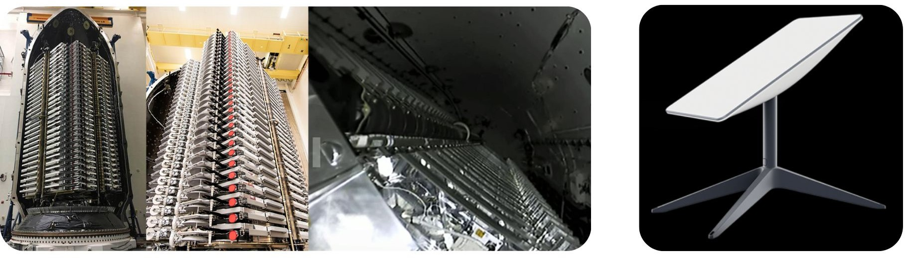

Qu'est-ce que Starlink ?
- Une constellation de milliers de satellites en orbite basse.
- Lancée par SpaceX, entreprise d'Elon Musk.
- Objectif : fournir un accès Internet haut débit à toute la planète.
- Les satellites Starlink sont en orbite basse (environ 550 km au-dessus de la Terre).

Les composants réseau
Composants d'un satellite Starlink :
- Panneaux solaires
- Antenne à réseau phasé : Connecter plusieurs stations au sol.
- Lasers spatiaux optiques : 200Gb/s
- Propulseurs Ioniques
- Star tracker
Caractéristiques du routeur WiFi Starlink :
- Normes IEEE 802.11a/b/g/n/ac (Wi-Fi 5)
- Double bande - 3 x 3 MIMO
- Couverture jusqu'à 185 m²

Comment ça fonctionne ?
- Utilisation du spectre Ku (12-18 GHz) et Ka (26.5-40 GHz).
- Antenne parabolique équipée de réseau à commande de phase.
- Protocoles : QoS, TDMA, FDMA, MIMO.